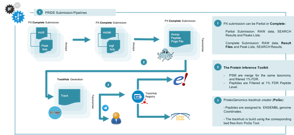
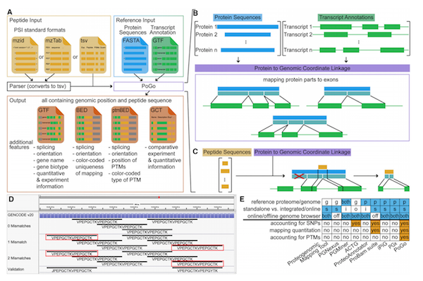

Dataset
Title: {{dataset-title}}
ProteomeXChange Accession: {{dataset-accession}}
{{dataset-description}}
Methods
Mass spectrometry (MS) based proteomics and next-generation sequencing technologies have improved our understanding of the crosstalk between genome, transcriptome, and proteome and contribute to a better understanding of the variations between healthy and disease states. Substantial advances in MS technologies enable more complete identification and quantification of proteomes, making these data more comparable with transcriptomics. However, most of the omics studies are performed in independent groups and most of the repositories and resources only stores data for a specific omics type: genomics or proteomics. Recently, integrative analysis of quantitative measurements from genomic and proteomic studies have identified novel insights into gene expression regulation, cell signaling, and disease.
The PRIDE Proteogenomics Pipeline has the goal of mapping each Complete Submission in PRIDE Archive database to ENSEMBL genomes coordinates (Figure 1). In the flowing sections, we will explain in details all the steps involve in the Proteogenomics Mapping Pipeline.
Figure 1: The PRIDE Proteogenomics Pipeline enables the representation of each Complete Submission into the ENSEMBL/UCSC Browsers. When the user made a Complete Submission containing the Result and Peaks list files in a standard file format; the (2) Proteogenomics Mapping Pipeline map each high-quality peptide to their corresponding genome coordinates. Finally, a Track Hub is generated and published in the ENSEMBL TrackHub Registry
PRIDE Proteogenomics Pipeline
The process to map the different MS-based proteomics evidences to the corresponding genome coordinates can be classified in multiple steps: (i) quality assessment of the PSMS/Peptide Evidences (ii) Mapping of the corresponding high-quality evidences to genome coordinates; (iii) Generation and publication of the resulted Track Hubs in a public Repository (Figure 2).
Each Complete Submission in PRIDE is a combination of Result Files (containing the PSMs/Peptides) and Peaks lists files. This combination is organized into Assays with the corresponding metadata associated (e.g tissue, taxonomy, cell type). In order to assess the quality of the corresponding PSMs/Peptides, the Protein Inference Toolkit (PIA) has been used [1]. In summary, PIA supports the majority of established search engines and scoring models. It enables to translate those scoring models into a Global FDR score and filter 1% FDR at PSM and 1% FDR Peptide levels.
The PoGo tool is used to map the resulted list of Peptides to the corresponding Genome Coordinates [2]. In summary, PoGo leverages the annotated protein coding sequences (CDS) together with a reference protein sequence database (protein-DB) to map peptides to their genomic loci (Figure 3).
Figure 4: (A) Transcript annotation (GTF) and translated protein sequences (FASTA) form the reference input for PoGo. In addition, the pogo input file containing the peptide sequences, experiment and the quantitative information should be provided. (B) Annotated protein coding transcripts in GTF format and respective translated protein sequences in FASTA format are integrated by PoGo through intermediate coordinates (turquoise), representing the exonic structure of the transcript within the protein. (C) Peptides, identified through searching mass spectrometry data against the protein sequence database, are mapped against the proteins. (D) Example mappings of PoGo for the overlapping repeat peptide VPEPGCTKVPEPGCTK in a genome browser (0 mismatches). Application of PoGo allowing for up to two mismatches results in identification of two additional repeats (1 and 2 mismatches, red boxes). The additional mappings of the initial peptide sequence were validated through peptides of the exact sequence identified in the same mass spectrometry experiment (validation). Leucine (L) and isoleucine (I) are substituted through their common single-letter code ‘‘J.’’ (E) Comparison of different peptide-to-genome mapping tools with regard to reference sequence type, integration into frameworks, support of online and offline genome browsers (blue). Additional features (orange) indicate the superior performance of PoGo over other tools.
The Proteogenomics Track Hub creator provides a set of functionalities to convert the list of peptides evidences into public Track Hub into the ENSEMBL Track Hub registry. Amount other functionalities it enables to download the latest releases of ENSEMBL protein and coordinates data files for specific taxonomies.
Cite Us:
If you use some specific parts of these pipeline, please cite us: